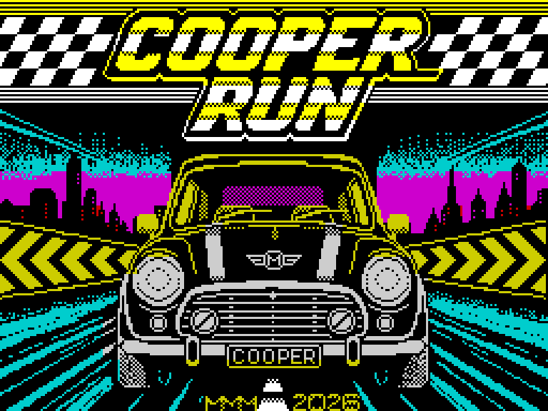

ZX SPECTRUM · v1.1 · 2026
COOPER
RUN
30TH TO 1ST.
FIVE STAGES.
NO EXCUSES.
Race the clock, overtake the rivals and survive the traffic in an original vertical arcade racer.
TAP format · 48K compatible · AY music on compatible systems

THE RACE
Every overtake matters.
You begin in 30th position. Complete five timed stages of 1100 metres and finish first to win.
Rival cars move you up the standings when overtaken. Ordinary traffic does not — but a head-on collision can stop you, and leaving the road costs precious speed and time.
Version 1.1 refreshes the presentation with a new loading screen and a new dedicated main-menu logo.
SCREENSHOTS
COOPER RUN v1.1.
Exact 3× nearest-neighbour presentation. No smoothing or filters.


CONTROLS
Accelerate. Brake. Commit.
QAccelerate
ABrake
OPTurn
KEMPKempston supported
REAL HARDWARE
LOAD ""Press ENTER, then start the tape or the device playing the TAP image.
OPEN SOURCE CODE
Built in Z80 assembly.
The game source, released binary and TAP-building utility are available on GitHub. No ZX Spectrum ROM is distributed.
CREDITS
Credits and AI disclosure.
Game design and programming: MMM
Loading screen artwork: Mário Viegas
Repository: MmmPT
Claude AI was used as a programming assistant during development. Design choices, integration, testing and final release decisions were made by the author.